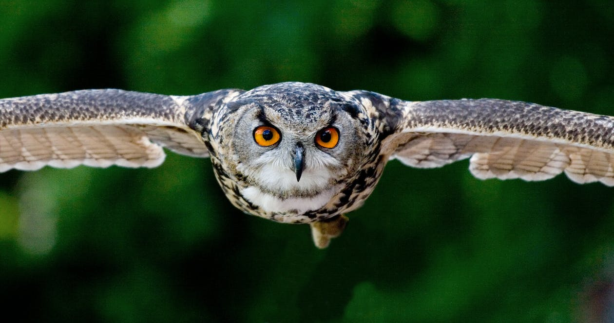
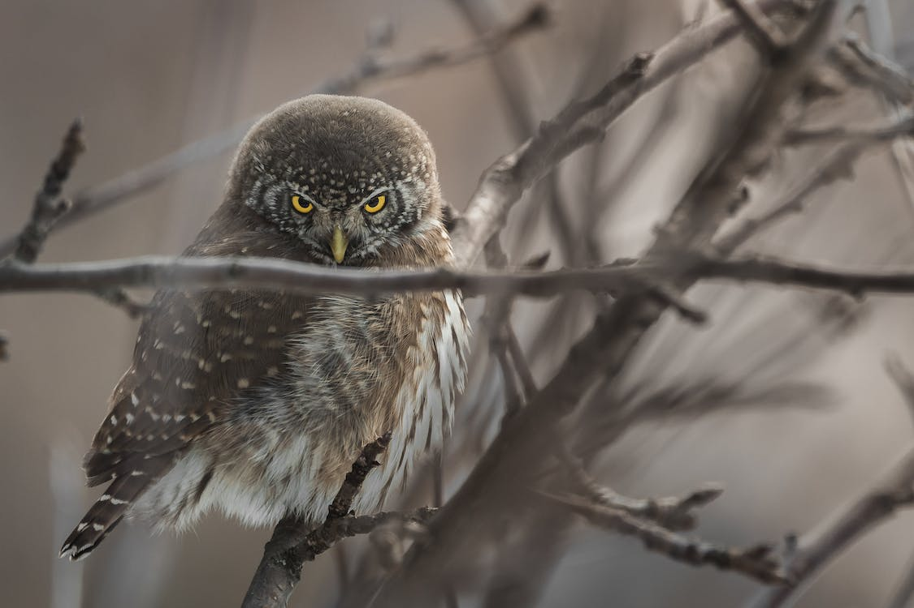
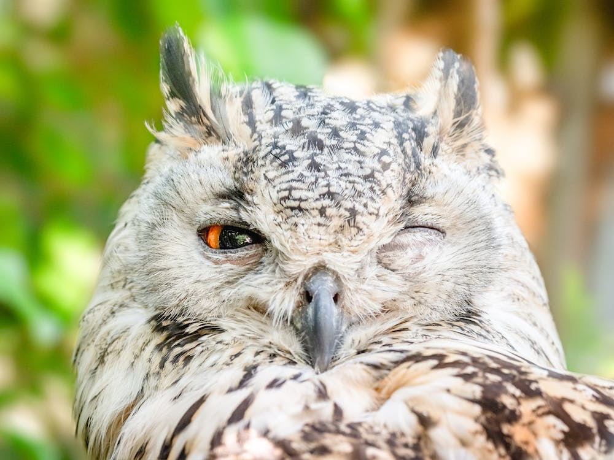

Protecting Owl habitats
Did you know?
Owls are often very territorial, so large connected habitats are essential for most owl species to thrive.
Sponsor Learn moreMore facts about owls

Owls range in size and so, therefore, do their prey. Many eat small rodents, while larger owls can take down small deer and foxes.

One of the most well-known characteristics of owls are their calls. These calls are used to protect territory and attract mates.
There are more than 200 species of owls dispersed around the world. Mostly nocturnal, owls are predatory birds which accounts for their hooked beaks and sharp talons.